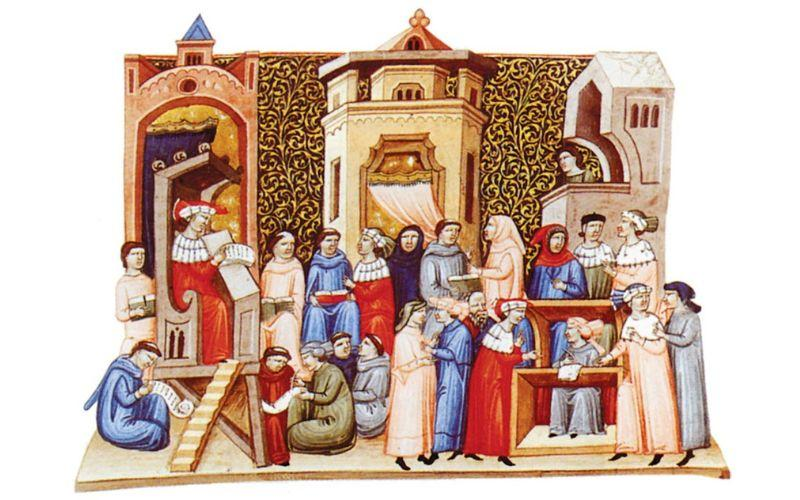

Este libro nos cuenta que el lenguaje que usamos todos los días no
es solo para charlar. Es súper importante para saber quiénes somos,
cómo nos llevamos con los demás y cómo construimos la sociedad.
Explica que la forma en que hablamos y entendemos a otros nos forma
y también nos ayuda a cambiar el mundo a nuestro alrededor.
Nos hace ver que si hablamos bien y nos entendemos, podemos
participar más y pensar mejor las cosas. En resumen, el libro dice
que el lenguaje tiene un poder enorme para unirnos o separarnos, y
que es clave para crecer como personas y como comunidad.

Una lectura que invita a entender el lenguaje como un acto de
identidad y encuentro social.
Al leerlo, se siente que el libro está escrito para jóvenes y
docentes que quieren comprender cómo la palabra construye identidad
y cambia la realidad cotidiana.
El mensaje principal es claro: comunicar no es solo decir, es
conectar, escuchar y decidir juntos el tipo de sociedad que queremos
ser.
 Portada frontal
Portada frontal
 Diseño editorial
Diseño editorial
 Portada alternativa
Portada alternativa